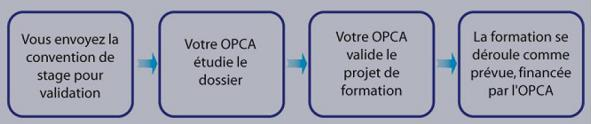
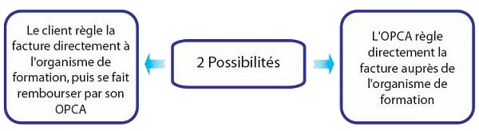

|
||||||||||
Financez vos formationsEnvie ou besoin d'une formation informatiqueIMC-SF oeuvre pour que vos projets informatiques aboutissent avec succès. Dans un environnement d'accueil favorable, nos consultants certifiés dans différents domaines peuvent vous apporter des solutions et vous accompagner sur les avancées technologiques et futures. Notre statut d'organisme de formation vous permet de bénéficier du financement de vos projets de formation et ainsi réduire ces coûts pour votre structure. Il vous suffit tout simplement de demander le financement de vos formations par votre OCPA.OCPA ? (Organisme Paritaire Collecteur Agréé)Toute entreprise assujettie à l'obligation de participer au financement de la formation professionnelle peut être tenue de verser tout ou partie de ses contributions aux organismes créés par les partenaires sociaux, agréés par l'état, auxquels elle adhère. (site Officiel )  Cette opportunité de financement par les OCPA est peu connue, et pourtant elles se révèle etre un réel atout, dans la mesure où les besoins en formations des entreprises ne représente aucune charge supplémentaire sur leur budget. La société se voit proposer par son OPCA, deux solutions de financemen:  |